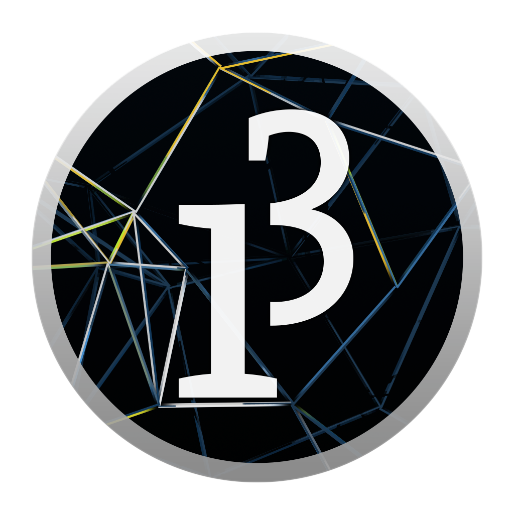
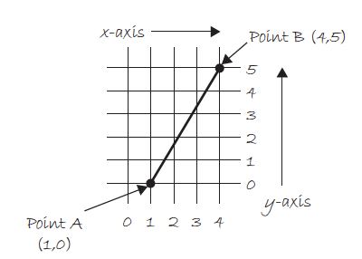
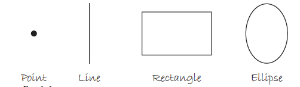
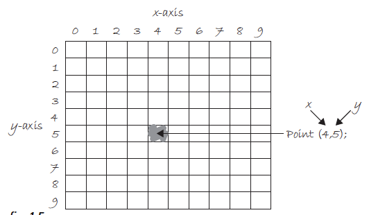
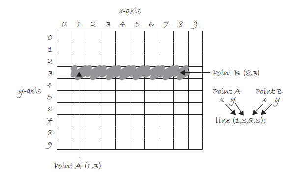
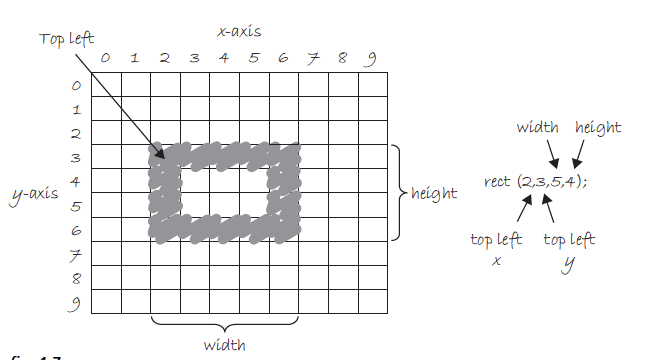
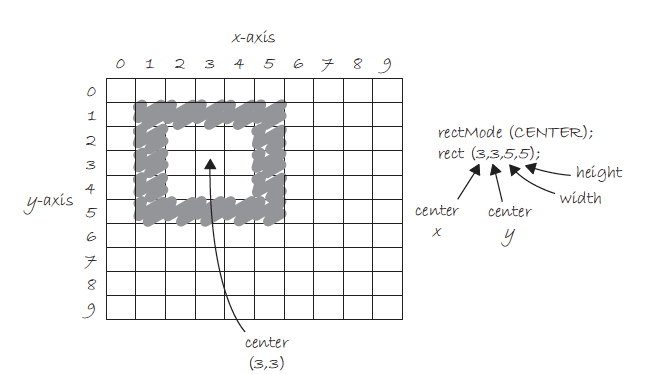
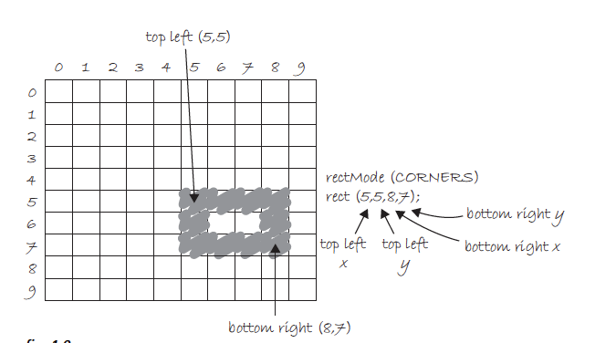

Processing Workshop
Sesión #1
Diego Montesinos / COCOLAB 2016
¿Qué es Processing?
“Processing is a flexible software sketchbook and a language for learning how to code within the context of the visual arts. Since 2001, Processing has promoted software literacy within the visual arts and visual literacy within technology.”
Sketchbook
Lenguaje de Programación
Historia

Baby Steps - Programación
¿Qué es programar?
Programar es escribir algoritmos.
Algoritmos


Ejercicio

Baby Steps - Processing
¿Algoritmo para dibujar una línea?
- Toma una hoja de papel
- Toma un lápiz
- Dibuja una línea
- Listo!
Programa para dibujar una línea
line(?,?,?,?);ProgramaSketch para dibujar una línea
line(?,?,?,?);¿Qué linea?
Sketch para dibujar una línea
line(1,0,4,5);PDE
Processing Development Environment
Basic Shapes
Punto
Lineas
Rectangulos
Rectangulos
Rectangulos
¿Elipses?
ellipse(1, 5, 10, 10);
ellipseMode(CENTER);
ellipseMode(CORNER);
Ejercicio
line(0,0,9,6);
point(0,2);
point(0,4);
rectMode(CORNER);
rect(5,0,4,3);
ellipseMode(CENTER);
ellipse(3,7,4,4);